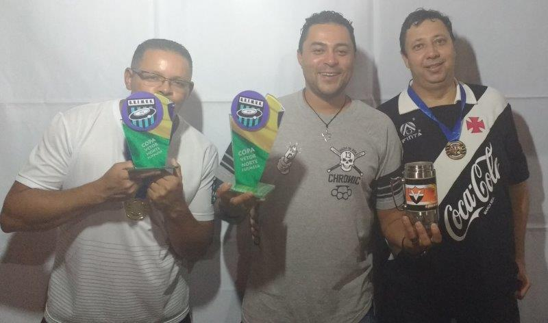

Fênix Ressurge das Cinzas e Quebra Jejum de Título.
A Copa Vetor Norte foi recheada de grandes jogos e muita emoção. Na primeira fase a grande surpresa da competição o estreante Cruz Azul do técnico Luciano foi a surpresa do grupo A, jogando com muita raça e ótima defesa deu trabalho para os adversários. Durante a fase de grupo disputada em dois grupos, classificando os dois melhores de cada grupo, houve muito equilíbrio sendo definido as semifinais apenas na última rodada. No final da primeira fase se classificaram:
No grupo A - Real Palestra em primeiro lugar com 16 pontos , Vasco em segundo lugar com 13 pontos.
No grupo B -Ventura em primeiro lugar com 12 pontos, Gálatas em segundo lugar com 11 pontos.
Os confrontos das semifinais foram tensos e bem disputados.
Nos jogos entre Real Palestra e Vasco os dois jogos foram muito estudados e equilibrados, o primeiro jogo so saiu gol no o segundo. O Real Palestra abriu o placar e foi controlando o jogo, mas sem se abater o Vasco foi pra cima e conseguiu a virada e reverteu a vantagem para o segundo jogo. O segundo jogo foi mais tenso, com alguns lances que geraram polêmica, o Real Palestra abriu o placar ainda no primeiro tempo e esse placar colocaria a equipe palestrina na final. Na volta para o segundo tempo na sequência de um dos lances que gerou reclamação por parte do técnico João Silvério (Vasco da Gama), o Real Palestra fez 2x0. Com a vantagem no placar e o tempo passando a equipe do Real Palestra relaxou e o Vasco diminuiu a fatura. Como o Real Palestra jogava por dois resultados iguais, seguiu para a final da Copa Vetor Norte.
Nos jogos entre Ventura e Gálatas o primeiro jogo foi bastante truncado com várias chances para as duas equipes, mas nenhum dos clubes conseguiu abrir o marcador e assim o placar do primeiro jogo não saiu do 0 a 0. Diferente do primeiro jogo o segundo foi um jogo aberto e mais uma vez o nervosismo estava atrapalhando as finalizações, quase no final do jogo a Sociedade Ventura abriu o placar e bastou apenas segurar a vantagem, pois mesmo com o empate ela se garantia na grande final.
Uma Final Épica
O Grêmio Vetor Norte fechou com sucesso uma das mais importantes competições de seu calendário, a Copa Vetor Norte. Real Palestra e Sociedade Ventura após passar das semifinais contra Vasco da Gama e Gálatas respectivamente, fizeram uma final eletrizante onde a Sociedade Ventura levou a melhor nos pênaltis após empate em 2x2. Foi um jogo franco, onde Real Palestra Fábio Henrique, chegou a abrir 2x0 no placar, mas a Sociedade Ventura Gleison Ventura de forma heroica reagiu e chegou ao empate levando a decisão para os pênaltis. Daí foram atuações distintas, enquanto o Real Palestra se saiu muito mal na cobrança dos pênatis mandando três bolas para fora, a equipe do Ventura mostrou precisão e muita frieza na hora das cobranças, convertendo as três penalidades, e assim levantando o belo troféu da competição.
Sociedade Ventura Campeã da Copa Vetor Norte 2017.
Vasco cada dia mais perto do primeiro título.
O Vasco da Gama João Silvério, ficou com o terceiro lugar da Copa Vetor Norte, após o vice-campeonato do troféu Geraldo Decourt e continua flertando com seu primeiro título nas mesas do Vetor Norte. O Vasco da Gama fez uma excelente campanha e fechou a competição vencendo a equipe do Gálatas Leandro por 1x0 na disputa pelo terceiro lugar.